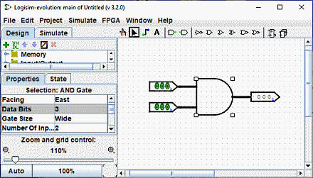
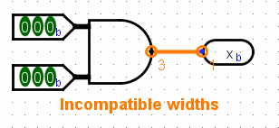
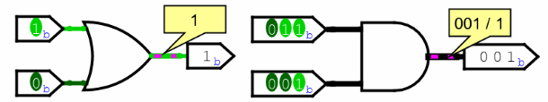

上一节: 附加功能
创建捆绑包
在简单的 Logisim-evolution 电路中，大多数导线仅承载一位； 但 Logisim-evolution 还允许您创建将多个位捆绑在一起的连线。 沿导线传输的位数就是该导线的 位宽 。
电路中每个组件上的每个输入和输出都有一个与其关联的位宽度。 位宽通常为 1，并且无法更改，但 Logisim-evolution 的许多内置组件都包含允许您自定义其输入和输出的位宽的属性。
下面的屏幕截图说明了用于查找两个三位输入的按位与的简单电路。 请注意三位输出是如何按位与两个输入的。 所有组件都经过定制，可通过其 Data Bits 属性处理三位数据； 屏幕截图显示了 AND 门属性，包括数据位属性 3。

Logisim-evolution 中的所有组件都为每个输入和输出定义一个位宽度。 相反，连线的位宽度是未定义的：相反，连线的宽度会适应其所连接的组件。 如果一根电线连接两个需要不同位宽度的组件，Logisim-evolution 将报错“宽度不兼容”，并以橙色指示违规位置。 在下面，输出引脚的数据位属性已更改为 1，因此 Logisim-evolution 报错线路无法将三位值连接到一位值。

连接不兼容位置的导线（以橙色绘制）不携带值。
对于1位导线，您可以一目了然地看到线携带的值，因为 Logisim-evolution 根据值将线着色为浅绿色或深绿色。 它不显示多位线的值：它们只是黑色。 不过，您可以使用 "poke" 工具 ( )。

此探测功能有助于使用调试电路。
下一节: 分离器 .